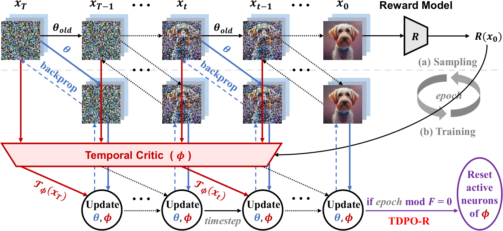
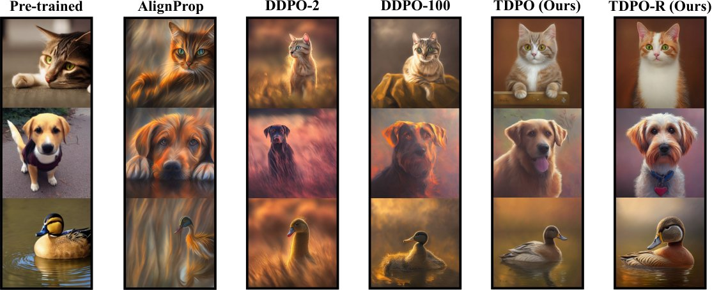
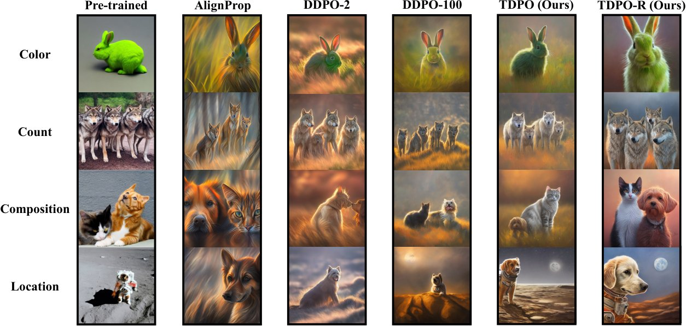
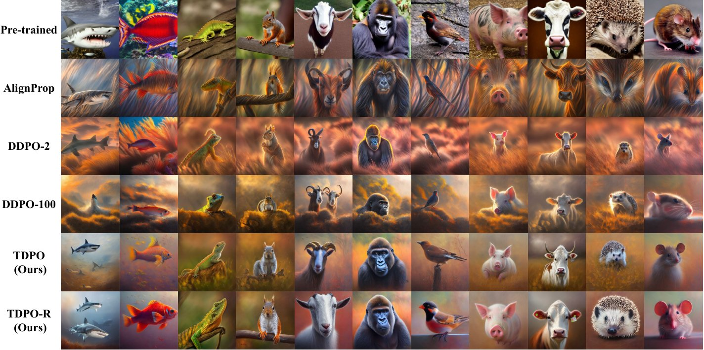

Confronting Reward Overoptimization for Diffusion Models: A Perspective of Inductive and Primacy Biases
Bridging the gap between diffusion models and human preferences is crucial for their integration into practical generative workflows. While optimizing downstream reward models has emerged as a promising alignment strategy, concerns arise regarding the risk of excessive optimization with learned reward models, which potentially compromises ground-truth performance. In this work, we confront the reward overoptimization problem in diffusion model alignment through the lenses of both inductive and primacy biases. We first identify a mismatch between current methods and the temporal inductive bias inherent in the multi-step denoising process of diffusion models, as a potential source of reward overoptimization. Then, we surprisingly discover that dormant neurons in our critic model act as a regularization against reward overoptimization while active neurons reflect primacy bias. Motivated by these observations, we propose Temporal Diffusion Policy Optimization with critic active neuron Reset (TDPO-R), a policy gradient algorithm that exploits the temporal inductive bias of diffusion models and mitigates the primacy bias stemming from active neurons. Empirical results demonstrate the superior efficacy of our methods in mitigating reward overoptimization. Code is avaliable at https://github.com/ZiyiZhang27/tdpo.
Diffusion models (Sohl-Dickstein et al., 2015) represent the state-of-the-art in generative modeling for continuous data, particularly excelling in text-to-image generation (Rombach et al., 2022). Traditional training methodologies for diffusion models predominantly adhere to a maximum likelihood objective. However, such approaches may not inherently prioritize the optimization of downstream objectives, such as image aesthetic quality (Schuhmann et al., 2022) or human preferences (Xu et al., 2023; Wu et al., 2023a). To align pre-trained diffusion models with downstream objectives, researchers have explored using learned or handcrafted reward functions to finetune these models. Typical solutions along this research direction can be categorized into supervised learning (Lee et al., 2023; Wu et al., 2023b; Dong et al., 2023), reinforcement learning (RL) (Fan et al., 2023; Black et al., 2024), and backpropagation through sampling (Clark et al., 2024; Prabhudesai et al., 2023).
扩散模型（Sohl-Dickstein 等，2015）代表了连续数据生成建模的当前最高水平，在文本到图像生成（Rombach 等，2022）中表现尤为突出。扩散模型的传统训练方法主要遵循极大似然目标。然而这类方法未必天然优先优化下游目标，例如图像美学质量（Schuhmann 等，2022）或人类偏好（Xu 等，2023；Wu 等，2023a）。为使预训练扩散模型与下游目标对齐，研究者探索了用学习得到的或手工设计的奖励函数来微调这些模型。该方向上典型的解决方案可分为监督学习（Lee 等，2023；Wu 等，2023b；Dong 等，2023）、强化学习（RL）（Fan 等，2023；Black 等，2024）以及贯穿采样过程的反向传播（Clark 等，2024；Prabhudesai 等，2023）。

图 1：TDPO-R 首先为每个 epoch 采样轨迹 ，轨迹来自由 参数化的固定扩散模型的去噪过程。在每个时间步 ，它用由 参数化的当前扩散模型执行一步去噪，用时序评论家估计时序奖励 ，该评论家由 参数化，并依据相应目标函数更新 与 的梯度。此外，TDPO-R 会重置 的活跃神经元，重置周期为每 个 epoch。
Despite the promise of reward-driven approaches, reward overoptimization remains a fundamental and under-researched challenge. This phenomenon, characterized by overfitting learned or handcrafted reward models, stems from the inherent limitations of these models in capturing the full spectrum of human intent. In image generation, reward overoptimization typically manifests as fidelity deterioration or continual degradation in cross-reward generalization against out-of-domain reward functions. Additionally, sample efficiency further complicates this issue. Notably, while RL-based methods (Fan et al., 2023; Black et al., 2024) exhibit relatively lower susceptibility to reward overoptimization, this advantage comes at the expense of diminished sample efficiency due to the extra sampling process isolated from training. This further entails a trade-off between sample efficiency and reward overoptimization.
尽管奖励驱动的方法前景可观，奖励过优化仍是一个根本性且研究不足的挑战。这一现象表现为对学习得到的或手工设计的奖励模型过拟合，根源在于这些模型在捕捉人类意图全谱上的固有局限。在图像生成中，奖励过优化通常表现为保真度退化，或相对域外奖励函数的跨奖励泛化持续恶化。此外，样本效率使问题更加复杂。值得注意的是，尽管基于 RL 的方法（Fan 等，2023；Black 等，2024）对奖励过优化的敏感度相对较低，这一优势却以样本效率下降为代价——其额外的采样过程与训练相互隔离。这进一步造成样本效率与奖励过优化之间的权衡。
Regrettably, the underlying causes of reward overoptimization in diffusion model alignment remain unclear, which is the primary concern of this work. To this end, we systematically investigate this problem from the perspective of both inductive and primacy biases. Firstly, within the context of deep RL, the consistency between the inductive bias of an algorithm and the solving task plays a crucial role in achieving robust generalization (Zhang et al., 2018). However, current reward-driven alignment approaches for diffusion models exclusively focus on maximizing rewards computed from the final generated images, while overlooking the sequential nature of diffusion models and valuable intermediate information within the multi-step denoising process. This mismatch between the reward structure and the model’s inherent temporal inductive bias potentially leads to overfitting and misalignment between the desired outcome (high reward) and the actual quality of the generation process.
遗憾的是，扩散模型对齐中奖励过优化的深层成因尚不清楚，而这正是本工作的首要关切。为此，我们从归纳偏置与首因偏置两个角度系统研究该问题。首先，在深度 RL 语境下，算法的归纳偏置与待解任务之间的一致性对实现稳健泛化起着关键作用（Zhang 等，2018）。然而，当前面向扩散模型的奖励驱动对齐方法只专注于最大化由最终生成图像计算出的奖励，忽视了扩散模型的序贯本性以及多步去噪过程中有价值的中间信息。奖励结构与模型固有时序归纳偏置之间的这种错配，可能导致过拟合，并使期望结果（高奖励）与实际生成过程的质量之间出现错位。
Secondly, primacy bias (Nikishin et al., 2022), the tendency of deep RL agents to overfit early training experiences, poses another potential source of reward overoptimization. To this end, we investigate the neuron states as internal indicators of primacy bias. Although Sokar et al. (2023) suggest that dormant neurons in deep RL agents have a negative effect on the model capacity and resetting dormant neurons reduces this effect, we surprisingly discover that dormant neurons instead act as an adaptive regularization against reward overoptimization, while active neurons appear to be susceptible to the primacy bias towards this phenomenon.
其次，首因偏置（Nikishin 等，2022）——深度 RL 智能体过拟合早期训练经验的倾向——是奖励过优化的另一个潜在来源。为此，我们把神经元状态作为首因偏置的内部指标加以考察。尽管 Sokar 等（2023）认为深度 RL 智能体中的休眠神经元会损害模型容量、而重置休眠神经元可减轻这一影响，我们却意外发现：休眠神经元反而充当了一种抵御奖励过优化的自适应正则化，而活跃神经元似乎更容易受到指向该现象的首因偏置影响。
Motivated by the above observations, we propose Temporal Diffusion Policy Optimization with critic active neuron Reset (TDPO-R), a novel policy gradient algorithm that exploits the temporal inductive bias inherent in the denoising process of diffusion models and mitigates the primacy bias stemming from active neurons. As illustrated in Figure 1, to exploit the temporal inductive bias, TDPO-R assigns each intermediate denoising timestep a temporal reward, which is derived by learning a temporal critic function. The diffusion model and the temporal critic are then optimized simultaneously via gradient descent with a per-timestep update strategy. Accordingly, the consistent temporal granularity between the temporal rewards and the per-timestep gradient updates not only mitigates reward overoptimization, but also improves sample efficiency by striking a balance between update frequency and stability. To counteract the primacy bias, TDPO-R employs a periodic reset strategy that specifically targets active neurons within the critic, further alleviating the reward overoptimization problem.
受上述观察启发，我们提出带评论家活跃神经元重置的时序扩散策略优化（TDPO-R）——一种新颖的策略梯度算法，它利用扩散模型去噪过程中固有的时序归纳偏置，并缓解源自活跃神经元的首因偏置。如图 1 所示，为利用时序归纳偏置，TDPO-R 给每个中间去噪时间步分配一个时序奖励，该奖励通过学习一个时序评论家函数得到。扩散模型与时序评论家随后通过梯度下降、以逐时间步更新策略同步优化。由此，时序奖励与逐时间步梯度更新之间一致的时序粒度不仅缓解了奖励过优化，还通过在更新频率与稳定性之间取得平衡提升了样本效率。为抵消首因偏置，TDPO-R 采用周期性重置策略，专门针对评论家中的活跃神经元，进一步缓解奖励过优化问题。
We deploy the proposed TDPO-R with Stable Diffusion v1.4 (Rombach et al., 2022) and conduct empirical evaluations using multiple reward functions over a variety of prompt sets. We first employ individual reward functions to quantitatively measure the sample efficiency and model performance per task. Then we introduce a novel metric of cross-reward generalization as a proxy for the quantitative evaluation of reward overoptimization. Evaluation results demonstrate the superior efficacy of our algorithms in the trade-off between sample efficiency and cross-reward generalization compared to state-of-the-art methods. In addition, we show that our critic active neuron reset strategy significantly contributes to a further mitigation of reward overoptimization during the RL process of our general training framework (i.e., TDPO), as evidenced by the outstanding performance in cross-reward generalization, as well as the fidelity and diversity observed in high-reward qualitative results. The main contributions of this paper are summarized as follows:
我们把所提 TDPO-R 部署在 Stable Diffusion v1.4（Rombach 等，2022）上，并用多个奖励函数在多种提示词集合上开展实证评测。我们先用单个奖励函数定量衡量每项任务的样本效率与模型性能，随后提出一种新的跨奖励泛化指标，作为奖励过优化的定量评估代理。评测结果表明，在样本效率与跨奖励泛化之间的权衡上，我们的算法优于当前最优方法。此外，我们表明，评论家活跃神经元重置策略显著促进了在我们通用训练框架（即 TDPO）的 RL 过程中进一步缓解奖励过优化——这一点由跨奖励泛化上的出色表现，以及高奖励定性结果中的保真度与多样性共同印证。本文的主要贡献总结如下：
To the best of our knowledge, this is the first work that investigates the underlying causes of reward overoptimization in diffusion model alignment from the perspective of inductive and primacy biases.
• 据我们所知，这是首个从归纳偏置与首因偏置角度研究扩散模型对齐中奖励过优化深层成因的工作。
We exploit the temporal inductive bias of diffusion models to design TDPO, an RL-based diffusion alignment framework with consistent temporal granularity of rewards and gradients, not only mitigating reward overoptimization but also improving sample efficiency.
• 我们利用扩散模型的时序归纳偏置设计了 TDPO——一个基于 RL 的扩散对齐框架，其奖励与梯度具有一致的时序粒度，不仅缓解奖励过优化，还提升了样本效率。
Building on TDPO, we identify the susceptibility of the critic’s active neurons to primacy bias, which contributes to overoptimization, and address it with TDPO-R, which enhances TDPO with a periodic neuron reset strategy to further mitigate reward overoptimization.
• 在 TDPO 基础上，我们识别出评论家的活跃神经元易受首因偏置影响并助长过优化，进而用 TDPO-R 加以解决：它通过周期性神经元重置策略增强 TDPO，进一步缓解奖励过优化。
We develop a quantitative metric of cross-reward generalization as a proxy for the evaluation of reward overoptimization, and demonstrate the superior efficacy of our methods in trading off efficiency and generalization.
• 我们提出了一种定量的跨奖励泛化指标，作为奖励过优化的评估代理，并证明我们的方法在效率与泛化的权衡上更为有效。
Reward finetuning of diffusion models. Lee et al. (2023) and Wu et al. (2023b) finetune diffusion models on rewards using supervised learning. Dong et al. (2023) present an online variant of these supervised learning-based methods. Fan et al. (2023) and Black et al. (2024) explore using policy gradient-based RL algorithms to align diffusion models with arbitrary rewards. Clark et al. (2024) and Prabhudesai et al. (2023) finetune diffusion models by backpropagating gradients of differentiable reward functions and truncate backpropagation to a few sampling steps. All these works use timestep-independent rewards based on fully-generated images, precluding intermediate samples in the denoising process. In contrast, we introduce timestep-dependent rewards for intermediate samples, and optimize diffusion models on these rewards at temporal granularity. More importantly, none of these works explicitly address reward overoptimization, which is the main focus of our work.
扩散模型的奖励微调。Lee 等（2023）与 Wu 等（2023b）用监督学习在奖励上微调扩散模型。Dong 等（2023）给出了这些基于监督学习方法的一种在线变体。Fan 等（2023）与 Black 等（2024）探索用基于策略梯度的 RL 算法使扩散模型与任意奖励对齐。Clark 等（2024）与 Prabhudesai 等（2023）通过对可微奖励函数的梯度做反向传播来微调扩散模型，并把反向传播截断到少数几步采样。这些工作都使用基于完整生成图像、与时间步无关的奖励，排除了去噪过程中的中间样本。相比之下，我们为中间样本引入依赖时间步的奖励，并在时序粒度上针对这些奖励优化扩散模型。更重要的是，这些工作都没有明确处理奖励过优化，而这正是本工作的核心关注。
Reward hacking and overoptimization. Reward overoptimization (Gao et al., 2023; Moskovitz et al., 2024), also termed “reward hacking” (Skalse et al., 2022; Miao et al., 2024), refers to the detrimental phenomenon where optimizing too much on imperfect reward functions hinders the model performance on the true objectives. To address this issue, two widely employed strategies are early stopping (Black et al., 2024) and Kullback-Leibler (KL) regularization (Fan et al., 2023). However, there still exists a lack of statistical evidence and understanding of their efficacy in reducing overoptimization. In this work, we investigate the underlying causes of reward overoptimization from the perspective of inductive and primacy biases. In addition, we are the first to design large-scale quantitative evaluations based on the cross-reward generalization metric for reward overoptimization in diffusion model alignment.
奖励破解与过优化。奖励过优化（Gao 等，2023；Moskovitz 等，2024），亦称“奖励破解”（Skalse 等，2022；Miao 等，2024），指的是在不完美的奖励函数上过度优化、损害模型在真实目标上性能的有害现象。针对该问题，两种被广泛采用的策略是早停（Black 等，2024）与 Kullback-Leibler（KL）正则化（Fan 等，2023）。然而，关于它们在减轻过优化上的有效性，仍缺乏统计证据与理解。本工作从归纳偏置与首因偏置的角度研究奖励过优化的深层成因。此外，我们是首个在扩散模型对齐中基于跨奖励泛化指标设计大规模定量评测的工作。
Primacy bias and plasticity loss. Primacy bias (Nikishin et al., 2022) is also identified by a variety of other terminologies, including implicit under-parameterization (Kumar et al., 2020), capacity loss (Lyle et al., 2021), and dormant neuron phenomenon (Sokar et al., 2023). All of these can be generalized as plasticity loss (Lyle et al., 2023; Kumar et al., 2023; Ma et al., 2024), i.e., loss of ability to learn and generalize. Resetting the last layer of an agent network (Nikishin et al., 2022) retrieves plasticity, but may cause knowledge forgetting. Sokar et al. (2023) suggest that dormant neurons in agent networks have a negative effect on model plasticity, which can be mitigated by resetting these neurons. However, our empirical findings present a surprising twist in the context of reward overoptimization, which reveals that dormant neurons act as an adaptive regularization that benefits our model, offering a novel perspective on understanding neuron states and overcoming primacy bias.
首因偏置与可塑性丧失。首因偏置（Nikishin 等，2022）也被多种其他术语所指称，包括隐式欠参数化（Kumar 等，2020）、容量损失（Lyle 等，2021）与休眠神经元现象（Sokar 等，2023）。这些都可被统一概括为可塑性丧失（Lyle 等，2023；Kumar 等，2023；Ma 等，2024），即学习与泛化能力的丧失。重置智能体网络的最后一层（Nikishin 等，2022）可以恢复可塑性，但可能造成知识遗忘。Sokar 等（2023）认为智能体网络中的休眠神经元会损害模型可塑性，可通过重置这些神经元来缓解。然而，我们的实证发现在奖励过优化的语境下呈现出令人意外的反转：休眠神经元充当了一种有益于模型的自适应正则化，为理解神经元状态与克服首因偏置提供了新视角。
This work is built upon Denoising Diffusion Probabilistic Model (DDPM) (Ho et al., 2020), a well-established diffusion backbone that learns to model a probability distribution by reversing a Markovian forward process that iteratively adds Gaussian noise towards the desired sample at each diffusion timestep . The reverse process is modeled by a denoising neural network to predict its posterior mean , which is a weighted average of and . The network is parameterized by and trained using the following objective:
本工作建立在去噪扩散概率模型（DDPM）（Ho 等，2020）之上。DDPM 是一种成熟的扩散骨干，它学习建模概率分布 ，做法是逆转一个马尔可夫前向过程 ：该过程迭代地向目标样本 加入高斯噪声，作用于每个扩散时间步 。逆向过程由一个去噪神经网络 建模，用以预测其后验均值 ，后者是 与 的加权平均。该网络由 参数化，并用如下目标训练：
|
|
(1) |
Additionally, DDPM is readily extended to the conditional generative modeling of , where is a conditional signal, such as a text prompt, processed by a conditional denoising network . To sample from a learned denoising process , one begins by drawing a Gaussian noisy sample , and then employs a specific sampling scheduler (Ho et al., 2020; Song et al., 2021), which iteratively generates subsequent samples according to outputs from the denoising network . An intermediate timestep of the denoising process with the noise variance can be written as:
此外，DDPM 可自然地推广到 的条件生成建模，其中 是条件信号（例如文本提示词），由条件去噪网络 处理。要从学得的去噪过程 中采样，先抽取一个高斯噪声样本 ，再使用特定的采样调度器（Ho 等，2020；Song 等，2021），迭代生成后续样本 ，其依据是去噪网络 的输出。噪声方差为 的去噪过程的中间时间步可写为：
| (2) |
Markov Decision Process (MDP). MDP provides a mathematical framework for modeling decision-making problems. We consider finite MDP in this work, where the agent acts iteratively at each of a sequence of discrete timesteps , up to a maximum timestep . At each timestep , the agent perceives a state , and selects an action by a policy , where are state and action spaces respectively. One timestep later, the agent receives a numerical reward as a consequence of its action, and finds itself in a new state , where denotes the transition probability function.
马尔可夫决策过程（MDP）。MDP 为决策问题建模提供了数学框架。本文考虑有限 MDP：智能体在一系列离散时间步 上迭代地行动，直至最大时间步 。在每个时间步 ，智能体感知状态 ，并选择一个动作 ，选择依据为策略 ，其中 分别为状态空间与动作空间。一个时间步之后，智能体因其动作收到一个数值奖励 ，并进入新状态 ，其中 表示转移概率函数。
RL objective. Within the MDP framework, the interaction between the agent and the environment give rise to trajectories , where each element represents a state-action pair at a specific timestep. Then the RL objective under this formulation is to find the policy that maximizes the expected accumulation of trajectory rewards:
RL 目标。在 MDP 框架下，智能体与环境的交互产生轨迹 ，其中每个元素表示特定时间步上的状态—动作对。那么该形式下的 RL 目标是找到使轨迹奖励的期望累积最大化的策略：
| (3) |
Now we delve into our approaches to addressing the reward overoptimization problem in diffusion model alignment, focusing on the exploration of both inductive and primacy biases. First, we will address the general concern of inductive bias mismatch for reward-driven diffusion model alignment methods, by introducing a novel RL-based training framework, i.e., TDPO. Subsequently, we will investigate the primacy bias, a more specific issue within TDPO that may also contribute to reward overoptimization, and further tackle this issue by incorporating a novel periodic reset strategy for active neurons within our critic model, leading to an enhanced version of TDPO, i.e., TDPO-R.
下面我们深入探讨应对扩散模型对齐中奖励过优化问题的方法，聚焦于归纳偏置与首因偏置两方面的探索。首先，我们通过提出一种新颖的基于 RL 的训练框架 TDPO，来解决奖励驱动的扩散模型对齐方法中归纳偏置错配这一普遍问题。随后，我们考察首因偏置——TDPO 内部一个更具体、同样可能导致奖励过优化的问题，并通过在我们的评论家模型中引入一种新颖的活跃神经元周期性重置策略来进一步解决该问题，由此得到 TDPO 的增强版本 TDPO-R。
In this section, we aim to address the mismatch between current reward-driven alignment approaches for diffusion models and the temporal inductive bias inherent in the multi-step denoising process of diffusion models. We first extend the standard multi-step MDP formulation of the denoising process as in (Fan et al., 2023; Black et al., 2024) by introducing timestep-dependent rewards for each denoising operation, along with an efficient approach to approximate these temporal rewards during diffusion model alignment. Building upon this new MDP formulation, we develop a novel RL framework for diffusion model alignment, i.e., Temporal Diffusion Policy Optimization (TDPO), which exploits the temporal inductive bias of the multi-step denoising process to perform temporal reward-driven optimization of diffusion polices via a per-timestep gradient update strategy.
本节旨在解决当前奖励驱动的扩散模型对齐方法与扩散模型多步去噪过程中固有时序归纳偏置之间的错配。我们首先扩展（Fan 等，2023；Black 等，2024）中给出的去噪过程标准多步 MDP 形式化，为每一步去噪操作引入依赖时间步的奖励，并给出一种在扩散模型对齐过程中高效逼近这些时序奖励的方法。在这一新的 MDP 形式化之上，我们提出一种用于扩散模型对齐的新颖 RL 框架——时序扩散策略优化（TDPO），它利用多步去噪过程的时序归纳偏置，通过逐时间步梯度更新策略对扩散策略执行时序奖励驱动的优化。
Temporal inductive bias. To perform RL-based diffusion model alignment, Fan et al. (2023) and Black et al. (2024) map the denoising process of diffusion models to a multi-step MDP, in which the trajectories correspond to the intermediate images sampled during the denoising process. In their settings, the cumulative rewards for all trajectories are condensed into a singular value , which is exclusively computed on the final sample , precluding the noisy samples obtained at each intermediate timestep . This timestep-independent reward definition creates a mismatch with the temporal inductive bias inherent in the multi-step denoising process of diffusion models, thereby posing a potential risk of overfitting to .
时序归纳偏置。为执行基于 RL 的扩散模型对齐，Fan 等（2023）与 Black 等（2024）把扩散模型的去噪过程映射为一个多步 MDP，其中轨迹 对应于去噪过程中采样出的中间图像。在他们的设定中，所有轨迹的累积奖励被压缩为单一值 ，且该值仅由最终样本 计算，排除了含噪样本 ——它们在每个中间时间步 上获得。这种与时间步无关的奖励定义，与扩散模型多步去噪过程中固有的时序归纳偏置产生错配，从而带来对 过拟合的潜在风险。
Denoising as MDP with temporal rewards. To inherit and exploit the temporal inductive bias within the denoising process, we characterize this process as a multi-step MDP with timestep-dependent trajectory rewards :
带时序奖励的去噪即 MDP。为继承并利用去噪过程中的时序归纳偏置，我们把该过程刻画为一个带依赖时间步轨迹奖励 的多步 MDP：
|
|
(4) |
where is the initial state distribution, is the Dirac delta distribution at , and optimizing the policy is equivalent to finetuning the diffusion model parameterized by . This formulation diverges from the ones presented in (Fan et al., 2023; Black et al., 2024), in terms of the timestep-dependent definition of trajectory rewards. We refer to the intermediate reward w.r.t. the noisy image from each timestep of the denoising process.
其中 为初始状态分布， 为在 处的 Dirac delta 分布，而优化策略 等价于微调由 参数化的扩散模型。该形式化在轨迹奖励的依赖时间步定义上有别于（Fan 等，2023；Black 等，2024）。我们把 记为中间奖励，它针对含噪图像 ，而该图像来自去噪过程的每个时间步 。
This new MDP formulation leads to a temporal reward-driven optimization of the diffusion policy, and thus exploits the aforementioned temporal inductive bias. This optimization procedure is driven by the objective of maximizing the expected temporal rewards at each denoising timestep, i.e.,
这一新的 MDP 形式化带来了对扩散策略的时序奖励驱动优化，从而利用了上述时序归纳偏置。该优化过程以最大化每个去噪时间步上的期望时序奖励为目标，即
| (5) |
Temporal reward approximation. Prevalent reward models such as aesthetic predictor (Schuhmann et al., 2022) and ImageReward (Xu et al., 2023) are usually trained on the distributions of the final clean images rather than intermediate noisy samples within the denoising process. Consequently, it is not feasible to derive the temporal rewards directly from these reward models. An intuitive solution for this problem involves retraining reward models on noisy images, but it restricts the direct utilization of off-the-shelf reward models and imposes excessive additional training overhead.
时序奖励逼近。主流的奖励模型，如美学预测器（Schuhmann 等，2022）与 ImageReward（Xu 等，2023），通常在最终干净图像的分布上训练，而非在去噪过程中的中间含噪样本上训练。因此无法直接从这些奖励模型导出时序奖励。直觉上的解决方案是在含噪图像上重新训练奖励模型，但这限制了现成奖励模型的直接使用，并带来过高的额外训练开销。
To address this issue, we present an efficient approach in this section. In particular, we first utilize off-the-shelf reward models to compute the reward function for each final clean image , denoted as . Then we approximate the temporal reward for each intermediate noisy image by learning a temporal critic function parameterized by . To facilitate the learning process, we further use as an anchor and compute as:
为解决这个问题，本节提出一种高效方法。具体地，我们先用现成奖励模型为每个最终干净图像 计算奖励函数，记为 。然后我们逼近时序奖励 ——它针对每个中间含噪图像 ——方法是学习一个时序评论家函数 ，该函数由 参数化。为便于学习，我们进一步把 作为锚点，计算 如下：
| (6) |
where is the prediction function of a temporal residual for each temporal reward, which is trained in conjunction with the policy over all denoising timesteps.
其中 是每个时序奖励的时序残差预测函数，它与策略一起在所有去噪时间步上联合训练。
Nonetheless, learning presents a non-trivial challenge, since we need to evaluate temporal rewards at each timestep. A naive implementation of the temporal critic with a comparable number of training parameters as the reward model can incur significant training complexity. To address this challenge, we leverage the encoders of target reward models to extract embeddings from the decoded images w.r.t. each intermediate latent feature across all timesteps of the denoising process. These embeddings serve as the input to a lightweight Multi-Layer Perceptron (MLP) with only 5 linear layers, of which the final output forms the residual prediction for each temporal reward, i.e.,
然而，学习 并非易事，因为我们需要在每个时间步评估时序奖励。若以与奖励模型相当数量的训练参数朴素实现时序评论家，会带来可观的训练复杂度。为应对这一挑战，我们借助目标奖励模型的编码器，从去噪过程所有时间步上每个中间潜特征所对应的解码图像中提取嵌入。这些嵌入被送入一个仅有 5 个线性层的轻量多层感知机（MLP），其最终输出构成每个时序奖励的残差预测，即
| (7) |
Encoder alignment. This practice of reusing encoders establishes an alignment between the encoders of both the reward model and the temporal critic. This alignment tends to be critical for overall performance, as it ensures consistency in feature representations and enables the temporal critic to inherit the inductive bias of the reward model during initial training. This inductive bias is further dynamically refined during subsequent training, adapting to the evolving intermediate states encountered during the denoising process. Beyond performance gains, encoder alignment also offers a compelling advantage in memory efficiency, as the need to store a separate encoder for the temporal critic is eliminated. Implementation details and extended analysis of encoder alignment are provided in Appendix E.
编码器对齐。这种复用编码器的做法在奖励模型与时序评论家的编码器之间建立了一种对齐。该对齐对整体性能往往至关重要：它保证了特征表示的一致性，并使时序评论家在初始训练时能继承奖励模型的归纳偏置。这一归纳偏置在后续训练中被进一步动态细化，以适应去噪过程中不断演化的中间状态。除性能收益外，编码器对齐在显存效率上也有明显优势——不再需要为时序评论家单独存储一个编码器。编码器对齐的实现细节与扩展分析见附录 E。
Temporal gradient estimation. Given the temporal rewards in Eq. (6) and (7), we can estimate the gradient of the objective in Eq. (5) w.r.t. the policy parameters at temporal granularity. We first sample trajectories from the denoising process , and collect the likelihood gradients with respect to , i.e., . To reuse the trajectories sampled by an old policy parameterized by , we employ importance sampling (Kakade & Langford, 2002), which reweights the temporal rewards by the corresponding probability ratio. Then the temporal gradient at each denoising timestep reads:
时序梯度估计。给定式 (6) 与式 (7) 中的时序奖励，我们可以在时序粒度上估计式 (5) 中目标对策略参数 的梯度。我们先采样轨迹 ，它们来自去噪过程 ，并收集关于 的似然梯度，即 。为复用由 参数化的旧策略所采样的轨迹，我们采用重要性采样（Kakade & Langford, 2002），用相应的概率比对时序奖励重新加权。于是每个去噪时间步上的时序梯度为：
| (8) |
The temporal critic is optimized by the objective below:
时序评论家通过如下目标优化：
| (9) |
where denotes the new residual prediction computed during the training phase and is used to estimate gradients for the critic model, while the old residual prediction in Eq. (6) is computed during the sampling phase with no gradient and is used to estimate temporal rewards.
其中 表示训练阶段计算出的新残差预测，用于估计评论家模型的梯度；而式 (6) 中的旧残差预测 在采样阶段计算、不带梯度，用于估计时序奖励。
Per-timestep gradient update. We concurrently update the policy parameters and the critic parameters via gradient descent. In particular, we perform each update in a per-timestep manner, in contrast to other methods that employ per-batch updates, emphasizing the temporal granularity of our approach. A per-timestep gradient update for or within our general RL-based training framework (i.e., TDPO) is performed via the averaged batch gradient below:
逐时间步梯度更新。我们通过梯度下降同步更新策略参数 与评论家参数 。具体地，我们以逐时间步的方式执行每次更新，而非像其他方法那样采用逐批更新，以此凸显本方法的时序粒度。在我们通用 RL 训练框架（即 TDPO）中，对 或 的逐时间步梯度更新通过如下批平均梯度完成：
| (10) |
where is the batch size, and is the objective gradient estimate with respect to or at each timestep in each mini-batch . The motivation and advantages of this per-timestep update strategy are described as follows:
其中 为批大小， 是目标梯度估计，其估计对象为 或 ，作用于每个时间步 ，该时间步位于每个小批 内。该逐时间步更新策略的动机与优势如下：
Remark on per-timestep update. In most cases of deep RL, a higher gradient update frequency often results in faster convergence but worse stability. In our settings, we operate on samples spanning two dimensions: timesteps and mini-batches, allowing us to elevate the gradient update frequency by reducing the sizes of these dimensions. However, reducing the dimension sizes introduces lower variance in sample distributions, potentially leading to overfitting. Intuitively, the variance of sample distributions within a per-timestep context (encompassing all mini-batches) exceeds that within a per-minibatch context (covering all timesteps derived from a shared Gaussian distribution). This suggests that reducing the number of timesteps per update represents a relatively secure approach for expediting convergence, while it still poses a risk of overfitting to the timestep-independent reward exclusively based on the final image. To mitigate this risk, our TDPO incorporates the temporal rewards as fine-grained guidance for the per-timestep updates, thereby improving sample efficiency while ensuring overall stability.
关于逐时间步更新的说明。在深度 RL 的多数情形中，更高的梯度更新频率往往带来更快收敛，却也带来更差的稳定性。在我们的设定中，样本横跨时间步与小批两个维度，因而可以通过缩小这两个维度的规模来提升梯度更新频率。然而缩小维度规模会降低样本分布的方差，可能导致过拟合。直觉上，逐时间步语境下（涵盖所有小批）的样本分布方差，大于逐小批语境下（覆盖源自同一高斯分布的所有时间步）的方差。这说明减少每次更新所含的时间步数是加速收敛的相对安全做法，但它仍存在对仅基于最终图像的、与时间步无关的奖励过拟合的风险。为降低这一风险，我们的 TDPO 把时序奖励作为逐时间步更新的细粒度引导，从而在保证整体稳定性的同时提升样本效率。

图 2：从预训练模型，以及在 Aesthetic Score 上经 AlignProp、DDPO-2、DDPO-100 以及我们的 TDPO 与 TDPO-R 进一步微调的模型采样出的图像生成结果。为公平比较，所有图像均使用固定随机种子 42 生成。此外，对微调后的模型，生成图像的美学分数都达到 7 0.1 附近的相近取值。
While TDPO mitigates reward overoptimization by incorporating the temporal inductive bias of diffusion models, primacy bias, a more specific factor contributing to reward overoptimization, may arise due to the limited model capacity of the temporal critic in the TDPO framework. In this section, we investigate how the state of neurons in our model reflects such primacy bias and how it contributes to reward overoptimization during diffusion model alignment.
尽管 TDPO 通过引入扩散模型的时序归纳偏置缓解了奖励过优化，但首因偏置——一个导致奖励过优化的更具体因素——可能因 TDPO 框架中时序评论家容量有限而出现。本节考察我们模型中的神经元状态如何反映这种首因偏置，以及它在扩散模型对齐过程中如何助长奖励过优化。
算法 1 TDPO-R：时序扩散策略优化（带评论家活跃神经元重置）
Neuron activations and states. Following Sokar et al. (2023), we use neuron activation in deep neural networks to categorize the states of neurons. We first consider each feature map between two layers within a network module as the state of a neuron. For an input of distribution , we denote the activation of a neuron in a module as , and compute an activation score for each neuron in the module as:
神经元激活与状态。沿用 Sokar 等（2023）的做法，我们用深度神经网络中的神经元激活来划分神经元的状态。我们首先把网络模块内两层之间的每个特征图视为一个神经元的状态。给定输入 ，其分布为 ；我们把神经元 在模块 中的激活记为 ，并计算激活分数 （针对每个神经元 ，该神经元位于模块 中）如下：
| (11) |
where is the number of neurons in the module , and the expected activation over is normalized by the average of all activations. Then we set a threshold for this activation score to categorize all neurons in our models into two opposite states. If the activation score of a neuron is above the threshold, we say the neuron is active, otherwise it is regarded as dormant.
其中 是模块 中神经元的数量，而在 上的期望激活被所有激活的平均值归一化。随后我们为该激活分数设定一个阈值，把模型中的全部神经元划分为两种相反的状态。若某神经元的激活分数高于阈值，则称该神经元为活跃的；否则视为休眠。
Dormant neurons are indispensable. Accordingly, we conduct empirical evaluations to investigate the effects of different neuron states on reward overoptimizaiton during the training process of TDPO. We detect the percentage of dormant neurons in our critic model, and observe a slow ascent of this percentage during training. To directly influence the neuron states during training, we periodically reset neurons of a given state by reinitializing its parameters to the original distributions. Surprisingly, we find that while resetting dormant neurons periodically reduces the dormant percentage at all training steps, it actually exacerbates reward overoptimizaiton. This deviates from the conclusion in (Sokar et al., 2023) where dormant neurons in deep RL were found to hinder model capacity and necessitate resets.
休眠神经元不可或缺。据此，我们开展实证评测，考察不同神经元状态在 TDPO 训练过程中对奖励过优化的影响。我们检测评论家模型中休眠神经元的百分比，并在训练中观察到该百分比缓慢上升。为在训练中直接干预神经元状态，我们通过把参数重新初始化为原始分布，周期性地重置给定状态的神经元。令人意外的是，我们发现：尽管周期性重置休眠神经元在所有训练步上都降低了休眠百分比，它实际上却加剧了奖励过优化。这与（Sokar 等，2023）的结论相左——后者发现深度 RL 中的休眠神经元会制约模型容量，因而需要重置。
Active neurons reflect primacy bias. We further explore resetting active neurons in the critic. Although this does not reduce the dormant percentage, it effectively mitigates reward overoptimizaiton. Interestingly, resetting all neurons in the critic also exacerbates reward overoptimization, albeit to a lesser degree compared to solely resetting dormant neurons. We posit that dormant neurons in the critic model act as an adaptive regularization mechanism against overoptimization to imperfect rewards, which suggests resetting dormant neurons may damage this implicit regularization. Our findings imply that, within the context of reward overoptimization, primacy bias manifests primarily in active neurons. Consequently, periodically resetting these neurons offers a potential mitigation strategy, encouraging the model to learn new regularization patterns without forgetting crucial past regularization. Further details and analyses supporting this observation are provided in Section 5.3 and Appendix B.
活跃神经元反映首因偏置。我们进一步探索重置评论家中的活跃神经元。尽管这并未降低休眠百分比，却有效缓解了奖励过优化。有意思的是，重置评论家中的全部神经元同样会加剧奖励过优化，只是程度比仅重置休眠神经元更轻。我们认为，评论家模型中的休眠神经元充当了一种针对不完美奖励过优化的自适应正则化机制，这意味着重置休眠神经元可能破坏这一隐式正则化。我们的发现说明，在奖励过优化的语境下，首因偏置主要体现在活跃神经元上。因此，周期性重置这些神经元提供了一条潜在的缓解途径，促使模型学习新的正则化模式，同时不遗忘过去至关重要的正则化。支持该观察的更多细节与分析见第 5.3 节与附录 B。
We further analyze the effect of the neuron states in the policy model. Since we adopt Low-Rank Adaptation (LoRA) (Hu et al., 2022) for the policy, only neurons within the LoRA layers can be reset. We detect very few dormant neurons, and resetting them makes no significant difference to the results. In this case, resetting active neurons causes catastrophic forgetting and heavily hinders learning.
我们还分析了策略模型中神经元状态的影响。由于策略采用低秩适配（LoRA）（Hu 等，2022），只有 LoRA 层内的神经元可被重置。我们检测到的休眠神经元极少，重置它们对结果没有显著影响。在此情形下，重置活跃神经元会引起灾难性遗忘，并严重阻碍学习。
TDPO with critic active neuron Reset (TDPO-R). Motivated by the above analyses, we present TDPO-R, a variant of TDPO that periodically resets the active neurons in the critic model with a frequency . In practice, to reinitialize the model parameters corresponding to the active neurons, we compute a neuron mask for each module :
带评论家活跃神经元重置的 TDPO（TDPO-R）。受上述分析启发，我们提出 TDPO-R——TDPO 的一个变体，它以频率 周期性重置评论家模型中的活跃神经元。实践中，为重新初始化活跃神经元对应的模型参数 ，我们为每个模块 计算一个神经元掩码：
| (12) |
where each boolean value in it is set to true if the corresponding activation score . This neuron mask is used to reinitialize the weights of both the incoming and outgoing layers corresponding to the active neurons in module . The pseudo-code of TDPO-R is summarized in Algorithm 1.
其中每个布尔值在对应激活分数 时被置为真。该神经元掩码用于重新初始化模块 中活跃神经元所对应的输入层与输出层的权重。TDPO-R 的伪代码总结于算法 1。
In neuroscience, there are several studies (Rotheneichner et al., 2018; Ovsepian, 2019; Benedetti & Couillard-Despres, 2022) investigating the function of dormant neurons. According to Ovsepian (2019), most neurons in the brain do not fire action potentials and remain dormant for a long time. These dormant neurons are formed during evolution, but are far from the scope of natural selection as they avoid regular functional tasks. However, under the influence of stress and disease, they occasionally become active, which can lead to various neurological and psychological disease symptoms and behavioral abnormalities. Interestingly, this conclusion mirrors our observation that resetting dormant neurons could be harmful for mitigating reward overoptimization.
在神经科学中，有多项研究（Rotheneichner 等，2018；Ovsepian，2019；Benedetti & Couillard-Despres，2022）考察休眠神经元的功能。据 Ovsepian（2019），大脑中的多数神经元并不发放动作电位，长期处于休眠状态。这些休眠神经元在进化过程中形成，却远处于自然选择的范围之外，因为它们回避常规的功能性任务。然而在应激与疾病影响下，它们偶尔被激活，可能导致各种神经与心理疾病症状以及行为异常。有意思的是，这一结论正呼应了我们的观察：重置休眠神经元可能对缓解奖励过优化有害。
图 3：域外评测结果——分别在 Aesthetic Score（左）、HPSv2（中）与 PickScore（右）上微调扩散模型时，相对 ImageReward（左）、PickScore（中）与 HPSv2（右）的跨奖励泛化。
图 4：在 PickScore（左）、HPSv2（中）与 Aesthetic Score（右）的奖励函数上微调扩散模型时，关于我们的 TDPO 与 TDPO-R 提升样本效率的定量评测结果，与每 epoch 更新频率为 2（DDPO-2）和 100（DDPO-100）的 DDPO 作比较。
We conduct comprehensive experiments to validate the efficacy of our algorithms on both sample efficiency and reward overoptimization alleviation when aligning text-to-image diffusion models with diverse reward functions.
我们开展全面实验，以验证我们的算法在把文本到图像扩散模型与多样奖励函数对齐时，在样本效率与奖励过优化缓解两方面的有效性。
Baselines. We compare our algorithms with state-of-the-art baselines11 1 Additional baselines, including DRaFT (Clark et al., 2024) that lacks open-source code, and DPOK(Fan et al., 2023) and ReFL(Xu et al., 2023) that underperform DDPO and AlignProp, are omitted in our reproductions due to the resource constraints., including pre-trained Stable Diffusion (Rombach et al., 2022), Denoising Diffusion Policy Optimization (DDPO) (Black et al., 2024), and AlignProp (Prabhudesai et al., 2023). We use the official PyTorch codebase of DDPO for result reproduction. Following DDPO, we use Stable Diffusion v1.4 as the base generative model. For a fair comparison, we reproduce AlignProp using Stable Diffusion v1.4, while their reported results are based on v1.5.
基线。我们把我们的算法与当前最优基线作比较（受资源限制，我们的复现中省略了若干额外基线，包括缺少开源代码的 DRaFT（Clark 等，2024），以及性能不及 DDPO 与 AlignProp 的 DPOK（Fan 等，2023）与 ReFL（Xu 等，2023）），包括预训练的 Stable Diffusion（Rombach 等，2022）、去噪扩散策略优化（DDPO）（Black 等，2024）与 AlignProp（Prabhudesai 等，2023）。我们使用 DDPO 的官方 PyTorch 代码库复现结果。沿用 DDPO，我们用 Stable Diffusion v1.4 作为基础生成模型。为公平比较，我们用 Stable Diffusion v1.4 复现 AlignProp，而他们报告的结果基于 v1.5。
Reward functions. To demonstrate the generalizability of our method, we perform training and evaluation on diverse reward functions, in which (a) Aesthetic Score is computed using the LAION aesthetic predictor (Schuhmann et al., 2022) and a text prompt set consisting of 45 animal names consistent with that in (Black et al., 2024); (b) PickScore (Kirstain et al., 2023) is employed as an objective reward function for human preference learning, using the same prompt set as for Aesthetic Score; (c) Human Preference Score v2 (HPSv2) (Wu et al., 2023a) presents another reward function for human preference learning, along with 802 prompts drawn from Human Preference Dataset v2; (d) ImageReward (Xu et al., 2023) is employed as an evaluation score function for cross-reward generalization.
奖励函数。为证明本方法的通用性，我们在多样的奖励函数上训练与评测：(a) Aesthetic Score 用 LAION 美学预测器（Schuhmann 等，2022）计算，文本提示词集合由 45 个动物名称构成，与（Black 等，2024）一致；(b) PickScore（Kirstain 等，2023）用作人类偏好学习的目标奖励函数，提示词集合与 Aesthetic Score 相同；(c) 人类偏好分数 v2（HPSv2）（Wu 等，2023a）提供另一种用于人类偏好学习的奖励函数，并配有人类偏好数据集 v2 中的 802 条提示词；(d) ImageReward（Xu 等，2023）用作跨奖励泛化的评测分数函数。
To establish a consistent benchmark, the training procedures and configurations of our algorithms are based on the official PyTorch implementation of DDPO, which adopts LoRA (Hu et al., 2022) to reduce memory and computation cost.
为建立一致的基准，我们算法的训练流程与配置基于 DDPO 的官方 PyTorch 实现，该实现采用 LoRA（Hu 等，2022）以降低显存与计算开销。
We employ TDPO and TDPO-R to separately finetune Stable Diffusion v1.4 on Aesthetic Score, PickScore, and HPSv2. We report the average reward over samples at each training interval w.r.t. specific number of reward queries, as the indicator of sample efficiency. TDPO(-R) performs each gradient update in a per-timestep manner with all batch samples averaged, resulting in a higher update frequency (100 gradient updates per epoch) compared to the original DDPO implementation (2 gradient updates per epoch). Thus, for a direct comparison, we further reproduce DDPO using the same update frequency as ours. Figure 4 shows that our algorithms consistently outperform both implementations of DDPO on each of the three rewards, demonstrating their effectiveness in improving sample efficiency. Notably, the high-frequency updates also accelerate training for DDPO, albeit at the cost of exacerbating reward overoptimization, as highlighted in Figure 3 and further discussed in Section 5.3.
我们分别用 TDPO 与 TDPO-R 在 Aesthetic Score、PickScore 与 HPSv2 上微调 Stable Diffusion v1.4。我们上报每个训练区间上、相对特定奖励查询次数的样本平均奖励，作为样本效率的指标。TDPO(-R) 以逐时间步方式执行每次梯度更新，并对所有批样本取平均，因此更新频率（每 epoch 100 次梯度更新）高于原始 DDPO 实现（每 epoch 2 次梯度更新）。因此，为作直接比较，我们进一步以与我们相同的更新频率复现了 DDPO。图 4 显示，我们的算法在三种奖励上都持续优于 DDPO 的两种实现，证明了其在提升样本效率上的有效性。值得注意的是，高频更新同样加快了 DDPO 的训练，尽管以加剧奖励过优化为代价——如图 3 所示，并在第 5.3 节进一步讨论。
Cross-reward generalization. To quantitatively assess reward overoptimization, we introduce cross-reward generalization, where the model is evaluated against out-of-domain reward functions after being finetuned on a specific reward function. As shown in Figure 3, the X-axis represents the training objective reward, while the Y-axis represents the evaluation score calculated by out-of-domain reward functions. Reward overoptimization typically leads to a decline or slow rise in the evaluation score as the training reward increases. In Figure 3, TDPO and TDPO-R exhibit superior performance in three sets of cross-reward evaluations compared to DDPO and AlignProp, demonstrating the effectiveness of our methods in mitigating reward overoptimization.
跨奖励泛化。为定量评估奖励过优化，我们引入跨奖励泛化：模型在特定奖励函数上微调后，再用域外奖励函数加以评测。如图 3 所示，X 轴表示训练目标奖励，Y 轴表示由域外奖励函数计算出的评测分数。奖励过优化通常表现为：随着训练奖励上升，评测分数下降或上升缓慢。在图 3 中，TDPO 与 TDPO-R 在三组跨奖励评测中均优于 DDPO 与 AlignProp，证明了我们的方法在缓解奖励过优化上的有效性。
Generalization to unseen prompts. As shown in Figure 5, TDPO and TDPO-R maintain their superior performance of cross-reward generalization even on novel text prompts unseen during the finetuning process, which further emphasizes their effectiveness and robustness against reward overoptimization. Implementation details and more evaluation results on unseen prompts are provided in Appendix C.
对未见提示词的泛化。如图 5 所示，即便在微调过程中未见过的新文本提示词上，TDPO 与 TDPO-R 依然保持跨奖励泛化上的优越表现，这进一步凸显了它们抵御奖励过优化的有效性与鲁棒性。关于未见提示词的实现细节与更多评测结果见附录 C。
图 5：在 Aesthetic Score 上微调扩散模型时，在一组未见动物文本提示词上评测得到的跨奖励泛化结果。
Effects of neuron states. As mentioned in Section 4.2, we investigate the effects of neuron states on reward overoptimizaiton by comparing TDPO and its variants with different reset strategies. In Figure 6, we present the results of cross-reward generalization to ImageReward for the variants that reset all, dormant, and active neurons in our critic model with the activation score threshold set to 0. For the variant that resets dormant neurons in our policy model, we set the threshold to 0.1, as using a threshold of 0 shows negligible differences from the standard TDPO. The results are consistent with the effects discussed in Section 4.2. Further analyses and evaluation results are provided in Appendix B.
神经元状态的影响。如第 4.2 节所述，我们通过比较 TDPO 及其采用不同重置策略的变体，考察神经元状态对奖励过优化的影响。在图 6 中，我们给出在激活分数阈值设为 0 时，对我们的评论家模型中全部、休眠和活跃神经元分别作重置的变体，相对 ImageReward 的跨奖励泛化结果。对重置策略模型中休眠神经元的变体，我们把阈值设为 0.1——因为使用阈值 0 时，其与标准 TDPO 的差异可忽略。这些结果与第 4.2 节讨论的影响一致。更多分析与评测结果见附录 B。
Alternate strategies for overoptimization. Both DDPO and AlignProp apply early stopping to prevent overoptimization, but the reliance on interactive inspection hinders its scalability. Fan et al. (2023) conduct an analysis of KL regularization in diffusion model alignment, while the quantitative evaluation on reward overoptimization is lacking. We also report the cross-reward generalization results of using KL regularization in Figure 6, which indicates that our neuron reset strategy is more effective for mitigating reward overoptimization compared to KL regularization.
过优化的替代策略。DDPO 与 AlignProp 都采用早停来防止过优化，但对交互式检查的依赖阻碍了其可扩展性。Fan 等（2023）分析了扩散模型对齐中的 KL 正则化，但缺乏关于奖励过优化的定量评测。我们也在图 6 中上报了使用 KL 正则化的跨奖励泛化结果，表明相较 KL 正则化，我们的神经元重置策略在缓解奖励过优化上更为有效。
图 6：在 Aesthetic Score 上微调扩散模型时，TDPO 各变体相对 ImageReward 的跨奖励泛化评测结果。

图 7：在涉及颜色（“A green colored rabbit”）、计数（“Four wolves in the park”）、构图（“A cat and a dog”）与位置（“A dog on the moon”）的未见文本提示词上，从预训练或在 Aesthetic Score 上进一步微调的模型得到的图像生成结果。为公平比较，所有图像均使用固定随机种子 42 生成。此外，对微调后的模型，生成图像的美学分数都达到 7 0.1 附近的相近取值。
In Figure 2, we compare the high-reward image results of the alignment methods when optimizing rewards to the same degree. The results from AlignProp and DDPO show notable saturation in terms of style, background, and sunlight, while our results manifest greater diversity in these aspects and exhibit higher fidelity, which highlights the effectiveness of our methods in mitigating reward overoptimization. Furthermore, we also provide additional qualitative results for unseen text prompts in Figure 7. In comparison with other methods, our results are better aligned with the prompts in terms of color, count, composition, and location, and also exhibit higher image fidelity, indicating a lower degree of reward overoptimization.
在图 2 中，我们比较了各对齐方法在把奖励优化到相同程度时的高奖励图像结果。AlignProp 与 DDPO 的结果在风格、背景与光照上呈现明显趋同，而我们的结果在这些方面表现出更大多样性、并具有更高保真度，凸显了我们的方法在缓解奖励过优化上的有效性。此外，我们还在图 7 中给出未见文本提示词上的更多定性结果。与其他方法相比，我们的结果在颜色、计数、构图与位置上与提示词更为契合，图像保真度也更高，说明奖励过优化程度更低。
In this work, we confront reward overoptimization in diffusion model alignment from the perspective of inductive and primacy biases. Specifically, we identify the temporal inductive bias of diffusion models and surprisingly discover that active neurons in our proposed temporal critic reflect the primacy bias. Inspired by these findings, we present TDPO-R, which exploits the temporal inductive bias of diffusion models and addresses the primacy bias during its RL training process. Empirical evaluations validate the effectiveness of the proposed methods in mitigating reward overoptimization.
本工作从归纳偏置与首因偏置的角度直面扩散模型对齐中的奖励过优化。具体地，我们识别出扩散模型的时序归纳偏置，并意外地发现我们所提时序评论家中的活跃神经元反映了首因偏置。受这些发现启发，我们提出 TDPO-R，它利用扩散模型的时序归纳偏置，并在其 RL 训练过程中应对首因偏置。实证评测验证了所提方法在缓解奖励过优化上的有效性。
Limitations and future work. To address computational limitations, our TDPO-R adopts LoRA finetuning instead of full model finetuning for diffusion models, precluding a comprehensive analysis of the diffusion model’s internal neuron states in this case. However, this work opens avenues for follow-up research on reward overoptimization of diffusion models. Moreover, the potential of multi-reward learning for diffusion models remains under-explored, highlighting a significant gap for future work. We hope that our work will also inspire further exploration of potential reward overoptimization in this new domain of multi-reward learning for diffusion models.
局限性与未来工作。为应对计算限制，我们的 TDPO-R 对扩散模型采用 LoRA 微调而非全模型微调，因而无法在此情形下全面分析扩散模型内部的神经元状态。不过，本工作为扩散模型奖励过优化的后续研究打开了通路。此外，扩散模型的多奖励学习潜力仍未得到充分探索，这是一个值得未来工作填补的重要空白。我们也希望本工作能激发对扩散模型多奖励学习这一新领域中潜在奖励过优化的进一步探索。
This work is supported in part by the Major Science and Technology Innovation 2030 “New Generation Artificial Intelligence” key project (No. 2021ZD0111700), the National Natural Science Foundation of China (Grant No. U23A20318 and 62276195), the Special Fund of Hubei Luojia Laboratory under Grant 220100014, and the National Research Foundation Singapore and DSO National Laboratories under the AI Singapore Programme (AISG Award No: AISG2-GC-2023-006). Dr. Tao’s research is partially supported by NTU RSR and Start Up Grants.
本工作部分受科技创新 2030—“新一代人工智能”重大项目（编号 2021ZD0111700）、国家自然科学基金（批准号 U23A20318 与 62276195）、湖北珞珈实验室专项基金（批准号 220100014），以及新加坡国家研究基金会与 DSO 国家实验室在新加坡人工智能计划下（AISG 奖项编号 AISG2-GC-2023-006）的资助。Tao 博士的研究部分受南洋理工大学 RSR 与启动经费支持。
This work contributes to the advancement of diffusion model alignment, with the potential to impact various aspects of society. Here, we highlight the key positive impacts:
本工作推动了扩散模型对齐的发展，并有可能影响社会的多个方面。在此我们强调关键的积极影响：
Improved alignment of diffusion models. This work confronts the issue of reward overoptimization, which hinders the effective alignment of diffusion models with downstream applications. By mitigating this issue, we pave the way for the development of more reliable and trustworthy diffusion models that reflect human preferences, which empowers individuals and businesses to leverage the powerful capabilities of diffusion models for various creative applications.
改进扩散模型的对齐。本工作直面阻碍扩散模型与下游应用有效对齐的奖励过优化问题。通过缓解该问题，我们为开发更可靠、更可信、能够反映人类偏好的扩散模型铺平了道路，使个人与企业得以借助扩散模型的强大能力开展各类创意应用。
Potential for broader applications. Beyond their direct impacts on diffusion models, the insights and techniques presented in this work, such as exploiting temporal inductive bias and addressing primacy bias through active neuron reset, may hold broader applicability in other domains of deep reinforcement learning, where similar challenges of overoptimization and bias hinder effective learning.
更广泛应用的前景。除对扩散模型的直接影响外，本工作提出的见解与技术——例如利用时序归纳偏置、通过重置活跃神经元应对首因偏置——在深度强化学习的其他领域也可能具有更广泛的适用性，这些领域同样面临过优化与偏置阻碍有效学习的类似挑战。
Furthermore, it is also essential to acknowledge potential societal concerns associated with this technology, such as:
此外，也有必要承认与该技术相关的潜在社会关切，例如：
Misuse of diffusion models. As diffusion models evolve towards enhanced alignment with human preferences and increased controllability, concerns regarding their potential misuse for malicious purposes, such as generating discriminatory or harmful contents, become increasingly salient. It is crucial to develop safeguards and ethical guidelines alongside technological advancements to mitigate these risks.
扩散模型的滥用。随着扩散模型在与人类偏好对齐和可控性上不断增强，对其被用于恶意目的（如生成歧视性或有害内容）的担忧也日益突出。在推进技术的同时制定防护措施与伦理准则，对降低这些风险至关重要。
Unintended biases in reward learning. The effectiveness of diffusion model alignment relies on accurately capturing human preferences from reward models. However, human preferences can be subjective and biased. It’s crucial to consider and mitigate potentially unintended biases in the data used to train the reward model to avoid exploiting and amplifying such biases in the generated outputs.
奖励学习中的非预期偏置。扩散模型对齐的有效性依赖于从奖励模型中准确捕捉人类偏好。然而人类偏好可能主观且带偏见。因此，必须考虑并减轻用于训练奖励模型的数据中可能存在的非预期偏置，避免在生成输出中利用并放大这类偏置。
In all experiments, we use Stable Diffusion v1.4 (Rombach et al., 2022) as the base generative model, which ensures consistency with DDPO (Black et al., 2024) and allows for a direct comparison with AlignProp (Prabhudesai et al., 2023), despite their use of v1.5 in AlignProp. In addition, we conduct diffusion model alignment on the LoRA weights (Hu et al., 2022) of the U-Net architecture instead of the full parameter set to reduce memory and computation overheads, following established practices and aligning with official implementations of both DDPO and AlignProp.
在所有实验中，我们使用 Stable Diffusion v1.4（Rombach 等，2022）作为基础生成模型，这保证了与 DDPO（Black 等，2024）的一致性，也便于与 AlignProp（Prabhudesai 等，2023）直接比较（尽管 AlignProp 使用 v1.5）。此外，遵循既有做法并与 DDPO 和 AlignProp 的官方实现保持一致，我们对 U-Net 结构的 LoRA 权重（Hu 等，2022）而非全部参数集做扩散模型对齐，以降低显存与计算开销。
DDPO implementations. We use the official PyTorch codebase of DDPO for result reproduction. As discussed in Section 5.2, our TDPO(-R) performs each gradient update in a per-timestep manner with all batch samples averaged, resulting in a higher update frequency (100 gradient updates per epoch) compared to the original DDPO implementation (2 gradient updates per epoch). For a fair comparison, we further reproduce DDPO using the same update frequency (100) and learning rate (1e-4) as ours. Since the PyTorch implementation of DDPO adopts gradient accumulation to reach larger effective batch sizes without requiring additional memory, we adjust its update frequency by reducing the gradient accumulation steps per epoch from 16 to 16, where denotes the number of denoising timesteps with a default value of 50. This leads to two variants of DDPO implementation: DDPO-2 and DDPO-100, differing exclusively in the hyperparameters governing the update frequency and the learning rate. All experiments were conducted on a system equipped with 8 NVIDIA A100 GPUs with 40GB of memory each.
DDPO 实现。我们使用 DDPO 的官方 PyTorch 代码库复现结果。如第 5.2 节所述，我们的 TDPO(-R) 以逐时间步方式执行每次梯度更新并对所有批样本取平均，因而更新频率（每 epoch 100 次梯度更新）高于原始 DDPO 实现（每 epoch 2 次梯度更新）。为公平比较，我们进一步用与我们相同的更新频率（100）和学习率（1e-4）复现 DDPO。由于 DDPO 的 PyTorch 实现采用梯度累积以在不增加显存的前提下达到更大的有效批大小，我们通过把每 epoch 的梯度累积步数从 16 降至 16 来调整其更新频率，其中 表示去噪时间步数，默认值为 50。由此得到 DDPO 的两个实现变体：DDPO-2 与 DDPO-100，仅在控制更新频率与学习率的超参数上不同。所有实验在配备 8 张显存 40GB 的 NVIDIA A100 GPU 的系统上进行。
AlignProp implementation. To facilitate a direct comparison, we reproduce AlignProp using Stable Diffusion v1.4, while their reported results are based on v1.5. All experiments were conducted on a system equipped with 4 NVIDIA A100 GPUs with 40GB of memory each, adhering to their default configurations, with an exception of the base model version.
AlignProp 实现。为便于直接比较，我们用 Stable Diffusion v1.4 复现 AlignProp，而他们报告的结果基于 v1.5。所有实验在配备 4 张显存 40GB 的 NVIDIA A100 GPU 的系统上进行，遵循其默认配置，仅基础模型版本不同。
TDPO and TDPO-R implementations. For consistency, the training procedures and configurations of our TDPO are based on the implementation of DDPO-100. Additionally, due to the relatively small parameter size of our temporal critic, we opt for direct training on its entire parameter set. To isolate the effects of our neuron reset strategy, our TDPO-R mirrors TDPO in terms of concurrent components and configurations. All experiments were conducted on a system equipped with 8 NVIDIA A100 GPUs with 40GB of memory each.
TDPO 与 TDPO-R 实现。为保证一致性，我们 TDPO 的训练流程与配置基于 DDPO-100 的实现。此外，由于时序评论家的参数规模相对较小，我们选择直接训练其全部参数集。为隔离神经元重置策略的作用，我们的 TDPO-R 在并发组件与配置上与 TDPO 保持一致。所有实验在配备 8 张显存 40GB 的 NVIDIA A100 GPU 的系统上进行。
Hyperparameter configurations. In Table 1, we list the hyperparameter configurations for all implementations.
超参数配置。我们在表 1 中列出所有实现的超参数配置。
表 1：DDPO-2、DDPO-100、TDPO 与 TDPO-R 的超参数配置列表。
| Hyperparameters | DDPO-2 | DDPO-100 | TDPO | TDPO-R |
| Random seed | 42 | 42 | 42 | 42 |
| Denoising timesteps () | 50 | 50 | 50 | 50 |
| Guidance scale | 5.0 | 5.0 | 5.0 | 5.0 |
| Policy learning rate | 3e-4 | 1e-4 | 1e-4 | 1e-4 |
| Policy clipping range | 1e-4 | 1e-4 | 1e-4 | 1e-4 |
| Maximum gradient norm | 1.0 | 1.0 | 1.0 | 1.0 |
| Optimizer | AdamW | AdamW | AdamW | AdamW |
| Optimizer weight decay | 1e-4 | 1e-4 | 1e-4 | 1e-4 |
| Optimizer | 0.9 | 0.9 | 0.9 | 0.9 |
| Optimizer | 0.999 | 0.999 | 0.999 | 0.999 |
| Optimizer | 1e-8 | 1e-8 | 1e-8 | 1e-8 |
| Samples per epoch | 256 | 256 | 256 | 256 |
| Training batch size | 8 | 8 | 8 | 8 |
| Training steps per epoch | 32 | 32 | 32 | 32 |
| Gradient accumulation steps | 16 | 16 | 16 | 16 |
| Gradient updates per epoch | 2 | 2 (100) | 2 (100) | 2 (100) |
| Critic learning rate | - | - | 1e-4 | 1e-4 |
| Critic clipping range | - | - | 0.2 | 0.2 |
| Neuron dormant threshold | - | - | - | 0 |
| Neuron reset frequency ( / epochs) | - | - | - | 10 |
The following is an extension of the analyses regarding neuron states discussed in Section 4.2.
以下是对第 4.2 节神经元状态分析的扩展。
Critic dormant neuron percentage. In Section 4.2, we described the effects of resetting different neurons in our critic model on the percentage of dormant neurons. Here we present the experimental results regarding these effects. The left plot in Figure 8 shows the percentage of dormant neurons in our critic model when finetuning the diffusion model on Aesthetic Score. As discussed in Section 4.2, there is a slow ascent of the dormant percentage of neurons in our critic model during training. Resetting dormant neurons consistently reduces the dormant percentage, while resetting active neurons increases it significantly. This further substantiates a conclusion that resetting dormant neurons discourages the presence of dormant neurons, while resetting active neurons discourages the presence of active neurons.
评论家休眠神经元百分比。在第 4.2 节中，我们描述了重置评论家模型中不同神经元对休眠神经元百分比的影响。这里给出相关的实验结果。图 8 左图展示了在 Aesthetic Score 上微调扩散模型时，我们评论家模型中休眠神经元的百分比。如第 4.2 节所述，训练过程中评论家模型神经元的休眠百分比缓慢上升。重置休眠神经元会持续降低该百分比，而重置活跃神经元则显著提高它。这进一步印证了一个结论：重置休眠神经元抑制了休眠神经元的存在，而重置活跃神经元抑制了活跃神经元的存在。
Overlap of dormant neurons. To validate the persistence of dormant neurons throughout training, we track the overlap percentage between dormant neurons identified in current and previous training iterations. The right plot in Figure 8 shows that the overlap percentage of dormant neurons in our critic model remains a value of 100 through the finetuning process. This indicates that, once a regularization with respect to dormant neurons is learned, then it will continuously affect subsequent training process. Combining this phenomenon with the empirical result we discussed in Section 4.2, which is that resetting dormant neurons in our critic model exacerbates overoptimization, we can further extrapolate that dormant neurons in the critic model act as a adaptive regularization mechanism against overoptimization to imperfect rewards. While resetting dormant neurons may damage this implicit regularization, periodically resetting active neurons offers a potential mitigation strategy, encouraging the model to learn new regularization patterns without forgetting crucial past regularization.
休眠神经元的重叠。为验证休眠神经元在整个训练过程中的持续性，我们追踪当前与先前训练迭代中识别出的休眠神经元之间的重叠百分比。图 8 右图显示，在微调过程中，我们评论家模型中休眠神经元的重叠百分比始终保持为 100。这表明，一旦学到关于休眠神经元的正则化，它就会持续影响后续的训练过程。把这一现象与第 4.2 节的实证结果（即重置评论家中的休眠神经元会加剧过优化）结合起来，我们可以进一步推断：评论家模型中的休眠神经元充当了一种针对不完美奖励过优化的自适应正则化机制。虽然重置休眠神经元可能破坏这一隐式正则化，但周期性重置活跃神经元提供了一条潜在的缓解途径，促使模型学习新的正则化模式，同时不遗忘过去至关重要的正则化。
图 8：在 Aesthetic Score 上微调扩散模型时，我们评论家模型中神经元的休眠百分比（左）以及当前与先前训练迭代中休眠神经元的重叠百分比（右）。
Policy dormant neuron percentage. In Section 4.2, we outlined the observation that a minimal number of dormant neurons is identified within the LoRA layers of our policy model. Accordingly, the left plot in Figure 9 shows the dormant percentage of neurons in the LoRA layers of our policy when finetuned on Aesthetic Score. Notably, the plot indicates that the dormant percentage remains in close proximity to zero throughout the entire training duration when employing a dormant threshold of 0. Consequently, to discern a more pronounced proportion of dormant neurons, we elevated the threshold to 0.1, leading to higher dormant percentages during training. Despite the reduction in dormant neurons following the resets with the threshold of 0.1, discernible effects on cross-reward generalization are not prominently evident, as depicted in Figure 6.
策略休眠神经元百分比。在第 4.2 节中，我们提到在策略模型的 LoRA 层内识别出的休眠神经元数量极少。相应地，图 9 左图展示了在 Aesthetic Score 上微调时，策略 LoRA 层中神经元的休眠百分比。值得注意的是，当休眠阈值取 0 时，该图显示休眠百分比在整个训练期间始终接近零。因此，为辨别出更显著的休眠神经元比例，我们把阈值提高到 0.1，使训练期间的休眠百分比升高。尽管在阈值 0.1 下重置后休眠神经元有所减少，但对跨奖励泛化的影响并不明显，如图 6 所示。
Policy neuron reset. In Section 4.2, we described an effect that resetting active neurons in our policy model causes catastrophic forgetting and heavily hinders learning. Here we present the experimental result regarding this effect. The right plot in Figure 9 shows the effect of periodic resets of policy active neurons on the sample efficiency of TDPO when finetuning on Aesthetic Score. Compared to the original TDPO, the TDPO variant incorporating periodic resets of policy active neurons encounters substantial difficulty in optimizing the reward function, due to the fact that the resets of the overwhelming majority of the model parameters result in the loss of pre-learned knowledge. This unsatisfactory effect can be mitigated by replacing the online-updating scheme with an offline-updating scheme that incorporates a replay buffer to preserve prior knowledge and experiences. We highlight this replacement as an extension of our work for future research.
策略神经元重置。在第 4.2 节中，我们描述了重置策略模型中活跃神经元会引起灾难性遗忘、严重阻碍学习的影响。这里给出该影响的实验结果。图 9 右图展示了在 Aesthetic Score 上微调时，周期性重置策略活跃神经元对 TDPO 样本效率的影响。相比原始 TDPO，纳入策略活跃神经元周期性重置的 TDPO 变体在优化奖励函数时遭遇极大困难，原因在于重置模型参数中的绝大多数导致了已学知识的丧失。这一不理想的影响可以通过把在线更新方案替换为引入回放缓冲区以保留先验知识与经验的离线更新方案来缓解。我们把这一替换列为本工作未来研究的扩展方向。
图 9：在 Aesthetic Score 上微调扩散模型时，策略 LoRA 层中神经元的休眠百分比（左）以及周期性重置策略活跃神经元对 TDPO 样本效率的影响（右）。
Additional results of cross-reward generalization. Here is an extension of the cross-reward generalization results for different variants of TDPO presented by Figure 6 in Section 5.3. In Figure 10, we show more cross-reward generalization results for TDPO variants with different neuron reset strategies or the KL regularization mechanism. The diffusion models in all variants are finetuned on Aesthetic Score and evaluated on HPSv2 and PickScore. We further investigate the cross-reward generalization capability of TDPO-R by employing an alternative evaluation with leaky ReLU (Maas et al., 2013) instead of the standard ReLU, achieving an even superior performance when evaluating cross-reward generalization against PickScore.
跨奖励泛化的补充结果。以下是对第 5.3 节图 6 中 TDPO 各变体跨奖励泛化结果的扩展。在图 10 中，我们给出采用不同神经元重置策略或 KL 正则化机制的 TDPO 变体的更多跨奖励泛化结果。所有变体中的扩散模型都在 Aesthetic Score 上微调，并在 HPSv2 与 PickScore 上评测。我们还用 leaky ReLU（Maas 等，2013）替代标准 ReLU 的另一种评测，进一步考察 TDPO-R 的跨奖励泛化能力，在相对 PickScore 的跨奖励泛化评测上取得了更优的表现。
图 10：在 Aesthetic Score 上微调扩散模型时，TDPO 各变体相对 HPSv2（左）与 PickScore（右）的跨奖励泛化补充结果。
In order to further validate the effectiveness and robustness of our methods, here we extend the cross-reward evaluation to new text prompts that are not previously seen by models during the finetuning process.
为进一步验证我们方法的有效性与鲁棒性，这里我们把跨奖励评测扩展到模型在微调过程中未曾见过的新文本提示词上。
Unseen animals. We first employ a novel text prompt set consisting of 8 unseen animal names, including “snail”, “hippopotamus”, “cheetah”, “crocodile”, “lobster”, “octopus”, “elephant”, and “jellyfish”. We conduct evaluations of cross-reward generalization over samples generated using these unseen animal prompts during the finetuning process. In Figure 11, we show the evaluation results when finetuning the diffusion model on Aesthetic Score via AlignProp, DDPO-2, DDPO-100, as well as our TDPO and TDPO-R. Notably, our TDPO and TDPO-R still maintain superior performance in cross-reward generalization compared to DDPO and AlignProp. These out-of-domain evaluations demonstrate the robust capabilities of TDPO-R in mitigating reward overoptimization, generalizing effectively to out-of-domain prompts.
未见动物。我们首先使用一个新的文本提示词集合，由 8 个未见动物名称构成，包括“snail”、“hippopotamus”、“cheetah”、“crocodile”、“lobster”、“octopus”、“elephant”与“jellyfish”。在微调过程中，我们对用这些未见动物提示词生成的样本做跨奖励泛化评测。图 11 给出了在 Aesthetic Score 上通过 AlignProp、DDPO-2、DDPO-100 以及我们的 TDPO 与 TDPO-R 微调扩散模型时的评测结果。值得注意的是，我们的 TDPO 与 TDPO-R 相较 DDPO 与 AlignProp 仍保持跨奖励泛化上的优越表现。这些域外评测表明 TDPO-R 在缓解奖励过优化上具有稳健的能力，能有效泛化到域外提示词。
图 11：在 Aesthetic Score 上微调扩散模型时，在一组未见动物文本提示词上评测得到的跨奖励泛化结果。
Color, count, composition, and location. Furthermore, we adopt a set of complex text prompts involving specific color (“A green colored rabbit”), count (“Four wolves in the park”), composition (“A cat and a dog”), and location (“A dog on the moon”) as introduced in (Fan et al., 2023). In (Fan et al., 2023), these prompts are originally used as training text prompts, meaning that they are seen by models during the finetuning process. In contrast, we utilize them as unseen prompts for cross-reward evaluations while finetuning models on Aesthetic Score, as illustrated in Figure 12.
颜色、计数、构图与位置。此外，我们采用一组复杂文本提示词，涉及（Fan 等，2023）中引入的特定颜色（“A green colored rabbit”）、计数（“Four wolves in the park”）、构图（“A cat and a dog”）与位置（“A dog on the moon”）。在（Fan 等，2023）中，这些提示词原本用作训练文本提示词，即模型在微调过程中见过它们。相比之下，我们在 Aesthetic Score 上微调模型时把它们当作未见提示词用于跨奖励评测，如图 12 所示。
图 12：在 Aesthetic Score 上微调时，在涉及颜色（“A green colored rabbit”）、计数（“Four wolves in the park”）、构图（“A cat and a dog”）与位置（“A dog on the moon”）的未见文本提示词上评测得到的跨奖励泛化结果。
Here is an extension of the qualitative results presented by Figure 2 in Section 5.4. In Figure 13, we present additional qualitative results with high-reward images on Aesthetic Score. The results from AlignProp and DDPO show notable saturation in terms of style, background, and sunlight, while our generation results manifest greater diversity in these aspects. Specifically, AlignProp generates images characterized by a fixed painting style, while the results from DDPO exhibit a photographic style with similar sunlight angles and similar grassy backgrounds, even in response to prompts like “shark” and “fish”. Conversely, our TDPO and TDPO-R demonstrate the capacity to generate images encompassing both painting and photographic styles, and exhibit an enhanced proficiency in generating diverse and coherent backgrounds aligned with given prompts. In our interpretation, Aesthetic Score characterizes a preference for images that exhibit a stylistic amalgamation, comprising elements reminiscent of both painting and photography. Accordingly, our algorithms ensure effective optimization towards this preference against overfitting a fixed style.
以下是对第 5.4 节图 2 定性结果的扩展。在图 13 中，我们给出在 Aesthetic Score 上高奖励图像的额外定性结果。AlignProp 与 DDPO 的结果在风格、背景与光照上呈现明显趋同，而我们的生成结果在这些方面表现出更大多样性。具体地，AlignProp 生成的图像具有固定的绘画风格，而 DDPO 的结果呈现摄影风格，光照角度与草地背景相似——即便面对“shark”和“fish”这类提示词也是如此。相反，我们的 TDPO 与 TDPO-R 能够生成涵盖绘画与摄影两种风格的图像，并在生成与给定提示词契合的多样而连贯的背景上表现出更强的能力。在我们的解读中，Aesthetic Score 刻画了一种对呈现风格融合的图像的偏好——这类图像兼有绘画与摄影的元素。相应地，我们的算法确保朝这一偏好有效优化，而不会对某一固定风格过拟合。

图 13：从预训练模型，以及在 Aesthetic Score 上经 AlignProp、DDPO-2、DDPO-100 以及我们的 TDPO 与 TDPO-R 进一步微调的模型采样出的额外定性结果。为公平比较，所有图像均使用固定随机种子 42 生成。此外，对微调后的模型，生成图像的美学分数都达到 7 0.1 附近的相近取值。
Reward model encoders. Following established practices (Schuhmann et al., 2022; Black et al., 2024), we leverage a pre-trained CLIP model (Radford et al., 2021) as the encoder of the reward model for Aesthetic Score. For the HPSv2 and PickScore reward models, we adopt their official PyTorch implementations, each of which utilizes a customized OpenCLIP-H model (Beaumont et al., 2022) finetuned on their specific preference data as the encoder. This ensures consistency with the established rewarding procedures associated with these models.
奖励模型编码器。遵循既有做法（Schuhmann 等，2022；Black 等，2024），我们用一个预训练 CLIP 模型（Radford 等，2021）作为 Aesthetic Score 的奖励模型编码器。对 HPSv2 与 PickScore 奖励模型，我们采用其官方 PyTorch 实现，二者各使用一个在其特定偏好数据上微调的定制化 OpenCLIP-H 模型（Beaumont 等，2022）作为编码器。这保证了与这些模型既有打分流程的一致性。
Temporal critic encoders. As introduced in 4.1, while finetuning on a specific reward function (Aesthetic Score, HPSv2, or PickScore), we incorporate the corresponding encoder from the respective reward model into our temporal critic. This encoder extracts embeddings from the decoded images w.r.t. each intermediate latent feature across all timesteps of the denoising process. These embeddings serve as the input to a lightweight Multi-Layer Perceptron (MLP) containing only 5 linear layers, with progressively decreasing output dimensionalities of 1024, 128, 64, 16, and 1 unit in the final layer. Crucially, this practice of reusing encoders establishes an alignment between the encoders of both the reward model and the temporal critic. This alignment tends to be critical for overall performance, as it ensures consistency in feature representations and enables the temporal critic to inherit the inductive bias of the reward model during initial training. Beyond performance gains, encoder alignment also offers a compelling advantage in memory efficiency, as the need to store a separate encoder for the temporal critic is eliminated, especially for large pre-trained models like CLIP (Radford et al., 2021) and OpenCLIP-H(Beaumont et al., 2022).
时序评论家编码器。如 4.1 节所述，在特定奖励函数（Aesthetic Score、HPSv2 或 PickScore）上微调时，我们把对应奖励模型的编码器纳入我们的时序评论家。该编码器从去噪过程所有时间步上每个中间潜特征所对应的解码图像中提取嵌入。这些嵌入被送入一个仅含 5 个线性层的轻量多层感知机（MLP），其输出维度逐层递减，分别为 1024、128、64、16 与最终层的 1 个单元。关键在于，这种复用编码器的做法在奖励模型与时序评论家的编码器之间建立了对齐。该对齐对整体性能往往至关重要：它保证了特征表示的一致性，并使时序评论家在初始训练时能继承奖励模型的归纳偏置。除性能收益外，编码器对齐在显存效率上也有明显优势——不再需要为时序评论家单独存储一个编码器，对 CLIP（Radford 等，2021）与 OpenCLIP-H（Beaumont 等，2022）这类大型预训练模型尤其如此。
Impact of misaligned encoders. To delve deeper into the impact of misaligned encoders, we conduct an additional experiment where we replace the HPSv2 encoder in the temporal critic with a misaligned encoder from Aesthetic Score while finetuning the diffusion model on HPSv2. As illustrated in Figure 14, this misalignment of the encoders lead to a significant decline in TDPO’s reward optimization performance. This finding highlights the critical role of encoder alignment between the reward model and the temporal critic for effective reward finetuning, as discrepancies in feature representations can hinder the critic’s ability to guide optimization towards the desired reward.
编码器错配的影响。为更深入地考察编码器错配的影响，我们开展了一项额外实验：在 HPSv2 上微调扩散模型时，把时序评论家中的 HPSv2 编码器替换为来自 Aesthetic Score 的错配编码器。如图 14 所示，编码器的这种错配导致 TDPO 的奖励优化性能显著下降。这一发现凸显了奖励模型与时序评论家之间编码器对齐对有效奖励微调的关键作用——特征表示的差异会削弱评论家把优化导向期望奖励的能力。
图 14：在 HPSv2 上微调扩散模型、并把时序评论家中的 HPSv2 编码器替换为来自 Aesthetic Score 的错配编码器时，TDPO 奖励优化性能的评测结果。
Generation control of diffusion models. Following prior works (Black et al., 2024; Clark et al., 2024) on diffusion model alignment, we incorporate Classifier-Free Guidance (CFG) (Ho & Salimans, 2021) to perform conditional generation of diffusion models. Prior works (Black et al., 2024; Clark et al., 2024) provided compelling evidence that the alignment methods with CFG-based generation control outperform other approaches including prompt engineering and classifier guidance (Dhariwal & Nichol, 2021; Bansal et al., 2023). Accordingly, to maintain clarity and emphasize our improvements in diffusion model alignment, we refrain from conducting comparative analyses on various generation control techniques.
扩散模型的生成控制。沿用关于扩散模型对齐的前人工作（Black 等，2024；Clark 等，2024），我们引入无分类器引导（CFG）（Ho & Salimans，2021）来执行扩散模型的条件生成。前人工作（Black 等，2024；Clark 等，2024）提供了有力证据，表明采用基于 CFG 的生成控制的对齐方法优于提示词工程与分类器引导（Dhariwal & Nichol，2021；Bansal 等，2023）等其他途径。因此，为保持论述清晰、突出我们在扩散模型对齐上的改进，我们未对各类生成控制技术作比较分析。
Reinforcement learning for diffusion models. Fan & Lee (2023) first utilize reinforcement learning to train diffusion models. Subsequent studies by Fan et al. (2023) and Black et al. (2024) delve into the utilization of policy gradient-based algorithms to align text-to-image diffusion models with arbitrary reward functions. Instead of finetuning model parameters, Hao et al. (2023) apply reinforcement learning to optimize prompts for text-to-image diffusion models. Wang et al. (2023) leverage diffusion models to create policies for offline reinforcement learning beyond the context of text-to-image generation.
面向扩散模型的强化学习。Fan & Lee（2023）首次用强化学习训练扩散模型。此后 Fan 等（2023）与 Black 等（2024）深入研究了用基于策略梯度的算法使文本到图像扩散模型与任意奖励函数对齐。Hao 等（2023）不微调模型参数，而是用强化学习为文本到图像扩散模型优化提示词。Wang 等（2023）则利用扩散模型为离线强化学习构造策略，其场景超出文本到图像生成。